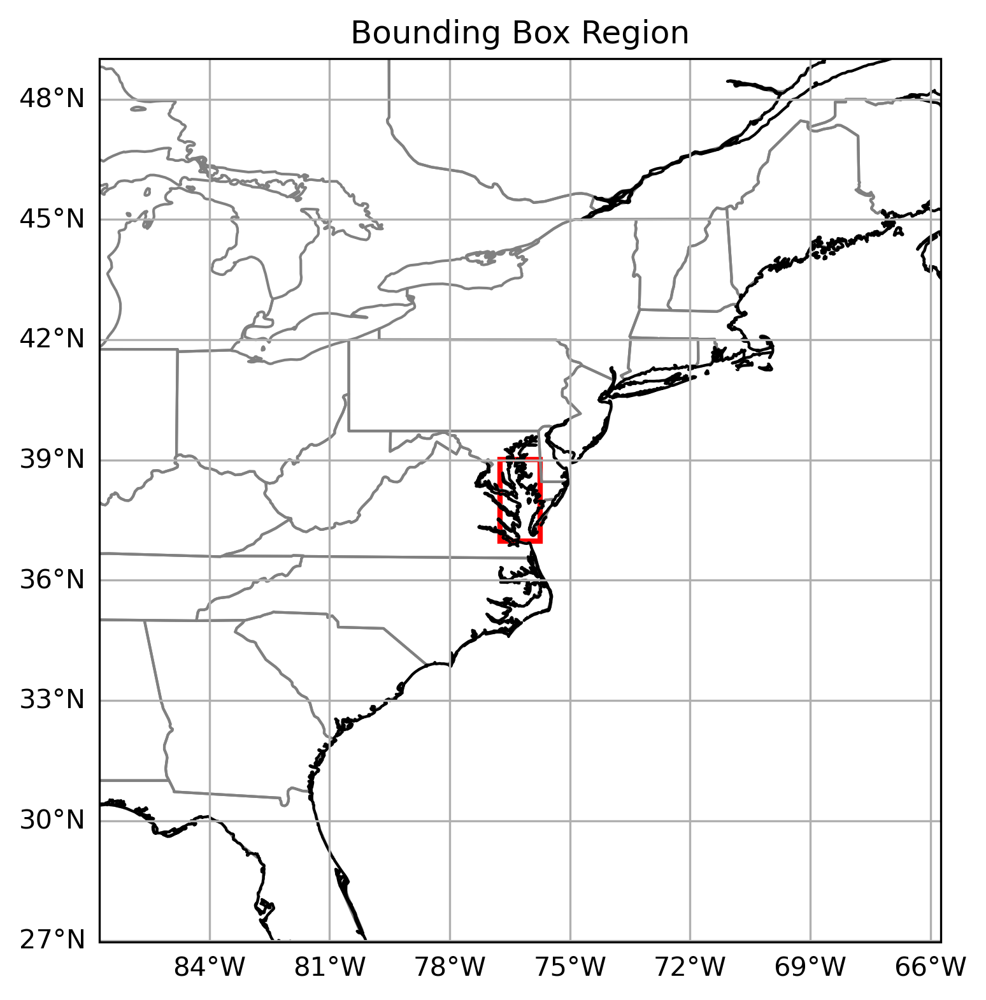
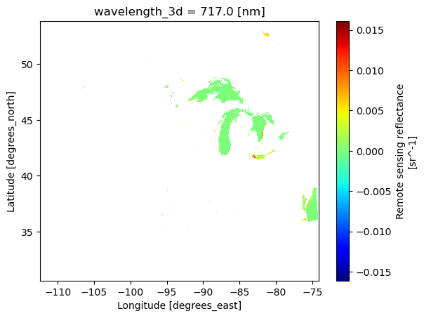
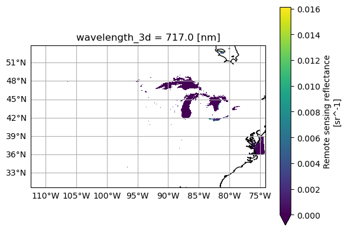
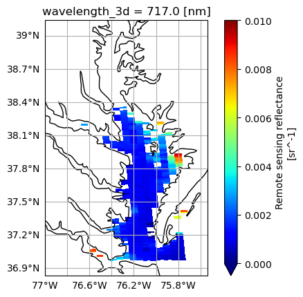
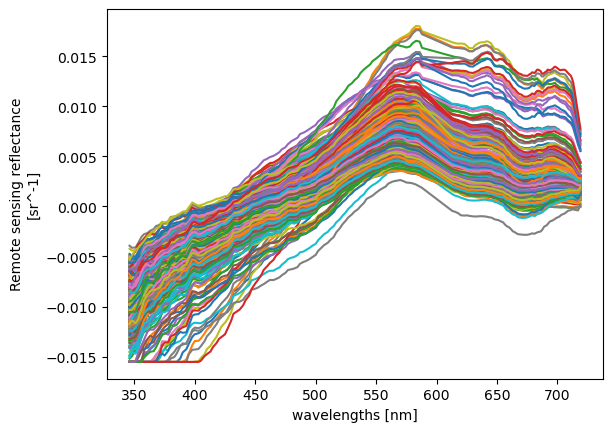

import cartopy.crs as ccrs
import earthaccess
import h5netcdf
import matplotlib.pyplot as plt
import numpy as np
import xarray as xrLevel 2 and 3 file structure


File Structure for Level 2 and 3 products from the Ocean Color Instrument (OCI)
NetCDF ([Network Common Data Format][netcdf]) is a binary file format for storing multidimensional scientific data (variables). It is optimized for array-oriented data access and support a machine-independent format for representing scientific data. Files ending in .nc are NetCDF files.
XArray is a [package][xarray] that supports the use of multi-dimensional arrays in Python. It is widely used to handle Earth observation data, which often involves multiple dimensions — for instance, longitude, latitude, time, and channels/bands.
📘 Learning Objectives
- Understand the differences between NetCDF file structure in Level 2 verus Level 3
- How to find groups in a NetCDF file
- How to use
xarrayto open OCI data- How to add indices and coordinates with
xarray
Import libraries
Login into NASA Earth Data
import earthaccess
auth = earthaccess.login()
# are we authenticated?
if not auth.authenticated:
# ask for credentials and persist them in a .netrc file
auth.login(strategy="interactive", persist=True)Chesapeake Bay
We will be looking at data over Chesapeake Bay.

Load Level 2 data
Level 2 data is swath data and is not a regular grid. As the satelitte follows an orbit around the earth, it collects data. The data are saved in files of roughly ~5-minute chunks of the path.
Rows (
number_of_lines) represent the along-track direction — each line is a step forward along the satellite’s orbit.Columns (
pixels_per_line) represent the cross-track direction — multiple observations made side-by-side during a single line scan.
We can use earthaccess to find the files that overlap with our Chesepeake Bay bounding box. We will also look for files that have low cloud cover.
tspan = ("2024-04-01", "2024-04-23")
bbox = (-76.75, 36.97, -75.74, 39.01)
clouds = (0, 30)
results = earthaccess.search_data(
short_name="PACE_OCI_L2_AOP",
temporal=tspan,
bounding_box=bbox,
cloud_cover=clouds,
)
len(results)1# Load the results and create a fileset
fileset = earthaccess.open(results)Level 2 NetCDF files are grouped
The Level 2 NetCDF files are grouped. The geophysical data and navigation data (lat/lon) are in different groups in the file. Let’s open the first file with xarray. Notice that this xarray.Dataset has nothing but “Attributes”. We cannot use xarray.open_dataset to open multi-group hierarchies. Instead we use xarray.open_datatree.
xr.open_dataset(fileset[0])<xarray.Dataset> Size: 0B
Dimensions: ()
Data variables:
*empty*
Attributes: (12/45)
title: OCI Level-2 Data AOP
product_name: PACE_OCI.20240414T183158.L2.OC_AOP.V3_...
processing_version: 3.0
history: l2gen par=/data18/sdpsoper/vdc/vpu37/w...
instrument: OCI
platform: PACE
... ...
geospatial_lon_max: -74.16712
geospatial_lon_min: -112.36776
startDirection: Ascending
endDirection: Ascending
day_night_flag: Day
earth_sun_distance_correction: 0.9936428666114807ds = xr.open_datatree(fileset[0], decode_timedelta = False)
ds.groups('/',
'/sensor_band_parameters',
'/scan_line_attributes',
'/geophysical_data',
'/navigation_data',
'/processing_control',
'/processing_control/input_parameters',
'/processing_control/flag_percentages')The Rrs data is in geophysical_data.
The lat/lon for the swaths is in navigation_data. To make maps, we want to add the lat/lon as coordinates in our xarray dataset. We will also want to add on the values for the wavelengths which is in sensor_band_parameters. Note, we could do this with xr.open_datatree() but specifying the group seems clearer.
f = fileset[0]
rrs = xr.open_dataset(f, group="geophysical_data")
nav = xr.open_dataset(f, group="navigation_data")
wave = xr.open_dataset(f, group="sensor_band_parameters")
rrs = rrs.assign_coords(
longitude = nav["longitude"],
latitude = nav["latitude"],
wavelength_3d = wave["wavelength_3d"]
)["Rrs"]
rrs<xarray.DataArray 'Rrs' (number_of_lines: 1710, pixels_per_line: 1272,
wavelength_3d: 172)> Size: 1GB
[374120640 values with dtype=float32]
Coordinates:
* wavelength_3d (wavelength_3d) float64 1kB 346.0 348.0 351.0 ... 717.0 719.0
longitude (number_of_lines, pixels_per_line) float32 9MB ...
latitude (number_of_lines, pixels_per_line) float32 9MB ...
Dimensions without coordinates: number_of_lines, pixels_per_line
Attributes:
long_name: Remote sensing reflectance
units: sr^-1
standard_name: surface_ratio_of_upwelling_radiance_emerging_from_sea_wat...
valid_min: -30000
valid_max: 25000Plot the swath
This is pretty wide. Our bounding box is in the bottom right corner.
rrs.sel(wavelength_3d=717).plot(x="longitude", y="latitude", cmap="jet")
fig = plt.figure()
ax = plt.axes(projection=ccrs.PlateCarree())
ax.coastlines()
ax.gridlines(draw_labels={"left": "y", "bottom": "x"})
plot = rrs.sel(wavelength_3d=717).plot(x="longitude", y="latitude", cmap="viridis", vmin=0, ax=ax)
Because Level 2 data is not on a grid, we cannot use slice() to get lat/lon subsets. Instead we need to create a mask.
bbox = (-76.75, 36.97, -75.74, 39.01)
lon_min, lat_min, lon_max, lat_max = bbox
# Apply mask using where(), drop empty pixels
rrs_box = rrs.where(
(rrs.latitude >= lat_min) & (rrs.latitude <= lat_max) &
(rrs.longitude >= lon_min) & (rrs.longitude <= lon_max),
drop=True
)
# Plot result
fig = plt.figure()
ax = plt.axes(projection=ccrs.PlateCarree())
ax.coastlines()
ax.gridlines(draw_labels={"left": "y", "bottom": "x"})
rrs_box.sel(wavelength_3d=717).plot(x="longitude", y="latitude", cmap="jet", vmin=0, vmax=0.01, ax=ax);
Let’s plot the full “Rrs” spectrum for individual pixels. A visualization with all the pixels wouldn’t be useful, but limiting to a bounding box gives a simple way to subset pixels. Note that, since we still don’t have gridded data (i.e. our latitude and longitude coordinates are two-dimensional), we can’t slice on a built-in index. Without getting into anything complex, we can just box it out.
The line plotting method will only draw a line plot for 1D data, which we can get by stacking our two spatial dimensions and choosing to show the new “pixel dimension” as different colors.
rrs_stack = rrs_box.stack(
{"pixel": ["number_of_lines", "pixels_per_line"]}, create_index=False,
)
rrs_valid = rrs_stack.dropna(dim="pixel", how="all") # drop pixels with all NaNsrrs_box.sel(longitude=76.2, method="nearest")--------------------------------------------------------------------------- KeyError Traceback (most recent call last) Cell In[24], line 1 ----> 1 rrs_box.sel(longitude=76.2, method="nearest") File /srv/conda/envs/notebook/lib/python3.12/site-packages/xarray/core/dataarray.py:1690, in DataArray.sel(self, indexers, method, tolerance, drop, **indexers_kwargs) 1574 def sel( 1575 self, 1576 indexers: Mapping[Any, Any] | None = None, (...) 1580 **indexers_kwargs: Any, 1581 ) -> Self: 1582 """Return a new DataArray whose data is given by selecting index 1583 labels along the specified dimension(s). 1584 (...) 1688 Dimensions without coordinates: points 1689 """ -> 1690 ds = self._to_temp_dataset().sel( 1691 indexers=indexers, 1692 drop=drop, 1693 method=method, 1694 tolerance=tolerance, 1695 **indexers_kwargs, 1696 ) 1697 return self._from_temp_dataset(ds) File /srv/conda/envs/notebook/lib/python3.12/site-packages/xarray/core/dataset.py:2890, in Dataset.sel(self, indexers, method, tolerance, drop, **indexers_kwargs) 2822 """Returns a new dataset with each array indexed by tick labels 2823 along the specified dimension(s). 2824 (...) 2887 2888 """ 2889 indexers = either_dict_or_kwargs(indexers, indexers_kwargs, "sel") -> 2890 query_results = map_index_queries( 2891 self, indexers=indexers, method=method, tolerance=tolerance 2892 ) 2894 if drop: 2895 no_scalar_variables = {} File /srv/conda/envs/notebook/lib/python3.12/site-packages/xarray/core/indexing.py:188, in map_index_queries(obj, indexers, method, tolerance, **indexers_kwargs) 185 options = {"method": method, "tolerance": tolerance} 187 indexers = either_dict_or_kwargs(indexers, indexers_kwargs, "map_index_queries") --> 188 grouped_indexers = group_indexers_by_index(obj, indexers, options) 190 results = [] 191 for index, labels in grouped_indexers: File /srv/conda/envs/notebook/lib/python3.12/site-packages/xarray/core/indexing.py:147, in group_indexers_by_index(obj, indexers, options) 145 grouped_indexers[index_id][key] = label 146 elif key in obj.coords: --> 147 raise KeyError(f"no index found for coordinate {key!r}") 148 elif key not in obj.dims: 149 raise KeyError( 150 f"{key!r} is not a valid dimension or coordinate for " 151 f"{obj.__class__.__name__} with dimensions {obj.dims!r}" 152 ) KeyError: "no index found for coordinate 'longitude'"
plot = rrs_valid.plot.line(hue="pixel", add_legend=False)
rWe will go over how to plot Rrs spectra with accurate wavelength values on the x-axis in an upcoming notebook.
Back to top ## 4. Inspecting OCI L3 File Structure
At Level-3 there are binned (B) and mapped (M) products available for OCI. The L3M remote sensing reflectance (Rrs) files contain global maps of Rrs. We’ll use the same earthaccess method to find the data.
tspan = ("2024-04-16", "2024-04-20")
bbox = (-76.75, 36.97, -75.74, 39.01)
results = earthaccess.search_data(
short_name="PACE_OCI_L3M_RRS_NRT",
temporal=tspan,
bounding_box=bbox,
)paths = earthaccess.open(results)
try:
paths[0].f.bucket
except AttributeError:
raise "The result opened without an S3FileSystem."OCI L3 data do not have any groups, so we can open the dataset without the group argument. Let’s take a look at the first file.
dataset = xr.open_dataset(paths[0])
datasetNotice that OCI L3M data has lat and lon coordinates, so it’s easy to slice out a bounding box and map the “Rrs_442” variable.
fig = plt.figure()
ax = plt.axes(projection=ccrs.PlateCarree())
ax.coastlines()
ax.gridlines(draw_labels={"left": "y", "bottom": "x"})
rrs_442 = dataset["Rrs_442"].sel({"lat": slice(-25, -45), "lon": slice(10, 30)})
plot = rrs_442.plot(cmap="viridis", vmin=0, ax=ax)Also becuase the L3M variables have lat and lon coordinates, it’s possible to stack multiple granules along a new dimension that corresponds to time. Instead of xr.open_dataset, we use xr.open_mfdataset to create a single xarray.Dataset (the “mf” in open_mfdataset stands for multiple files) from an array of paths.
We also use a new search filter available in earthaccess.search_data: the granule_name argument accepts strings with the “*” wildcard. We need this to distinguish daily (“DAY”) from eight-day (“8D”) composites, as well as to get the 0.1 degree resolution projections.
tspan = ("2024-04-12", "2024-04-24")
results = earthaccess.search_data(
short_name="PACE_OCI_L3M_CHL_NRT",
temporal=tspan,
granule_name="*.DAY.*.0p1deg.*",
)paths = earthaccess.open(results)
try:
paths[0].f.bucket
except AttributeError:
raise "The result opened without an S3FileSystem."The paths list is sorted temporally by default, which means the shape of the paths array specifies the way we need to tile the files together into larger arrays. We specify combine="nested" to combine the files according to the shape of the array of files (or file-like objects), even though paths is not a “nested” list in this case. The concat_dim="date" argument generates a new dimension in the combined dataset, because “date” is not an existing dimension in the individual files.
dataset = xr.open_mfdataset(
paths,
combine="nested",
concat_dim="date",
)
datasetA common reason to generate a single dataset from multiple, daily images is to create a composite. Compare the map from a single day …
chla = np.log10(dataset["chlor_a"])
chla.attrs.update(
{
"units": f'lg({dataset["chlor_a"].attrs["units"]})',
}
)
plot = chla.sel({"date": 0}).plot(aspect=2, size=4, cmap="GnBu_r")… to a map of average values, skipping “NaN” values that result from clouds.
chla_avg = chla.mean("date")
chla_avg.attrs.update(
{
"long_name": chla.attrs["long_name"],
"units": f'lg({chla.attrs["units"]})',
}
)
plot = chla_avg.plot(aspect=2, size=4, cmap="GnBu_r")You have completed the notebook on OCI file structure. More notebooks are comming soon!